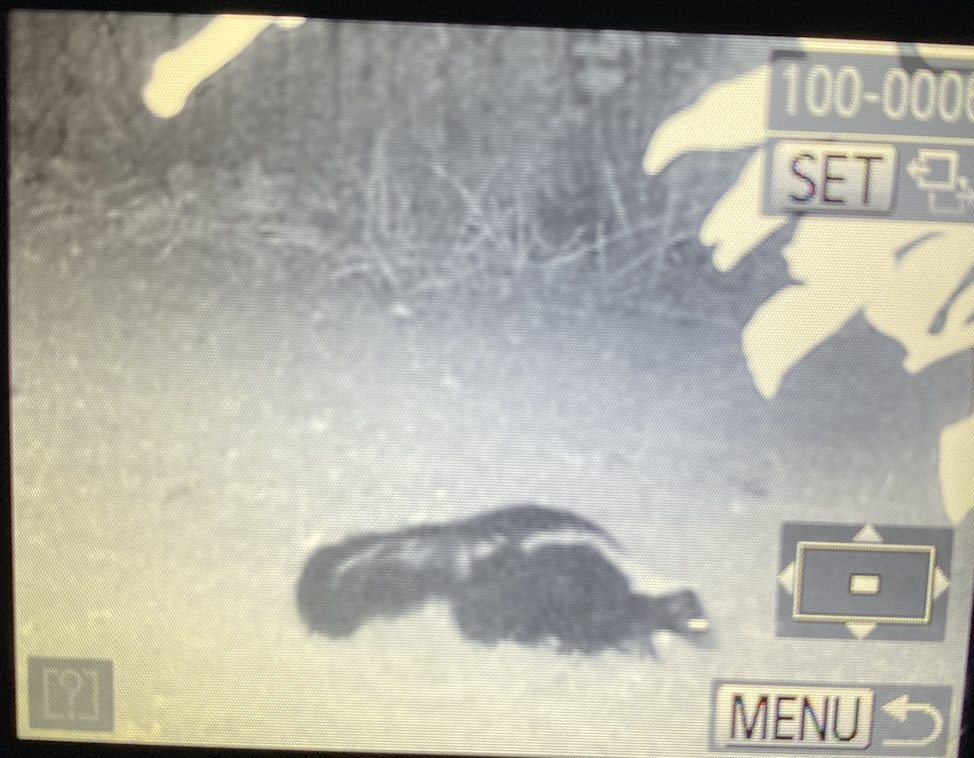
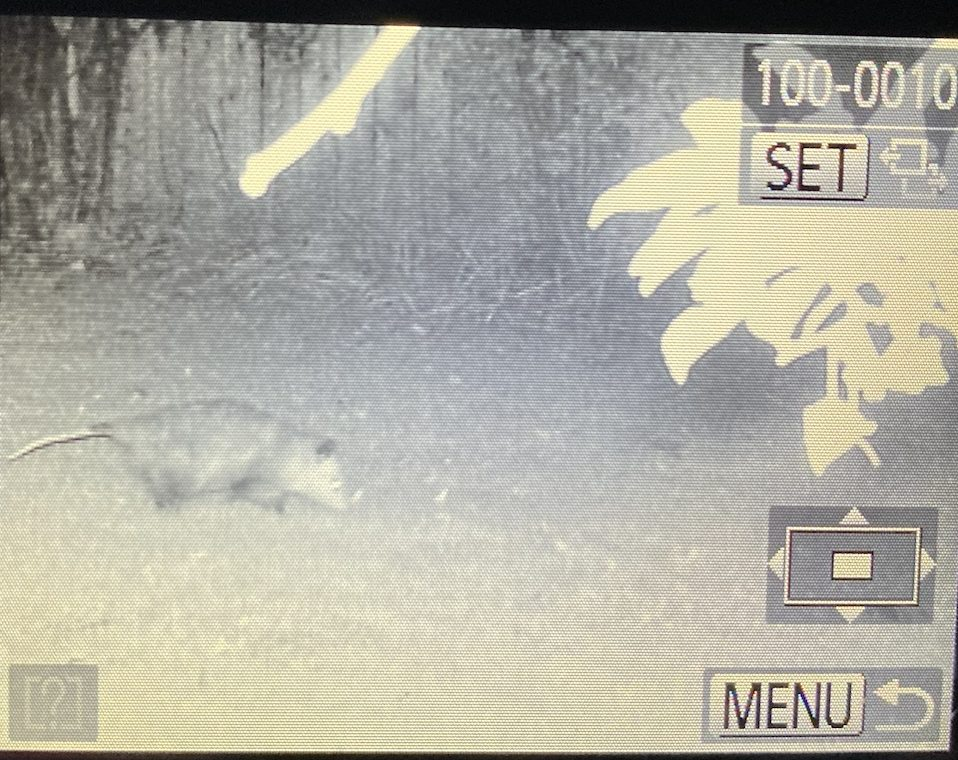
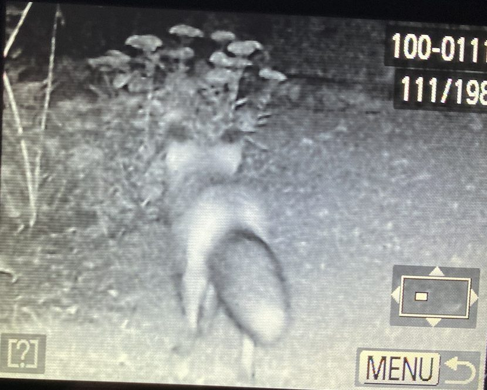
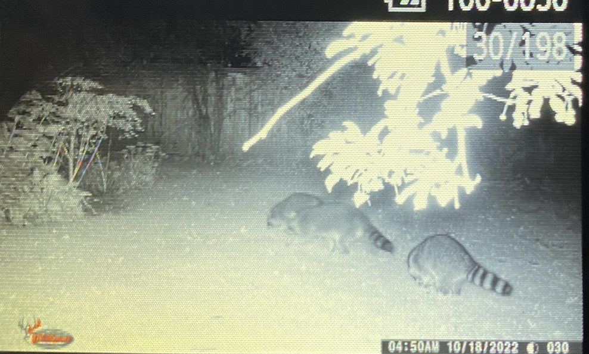
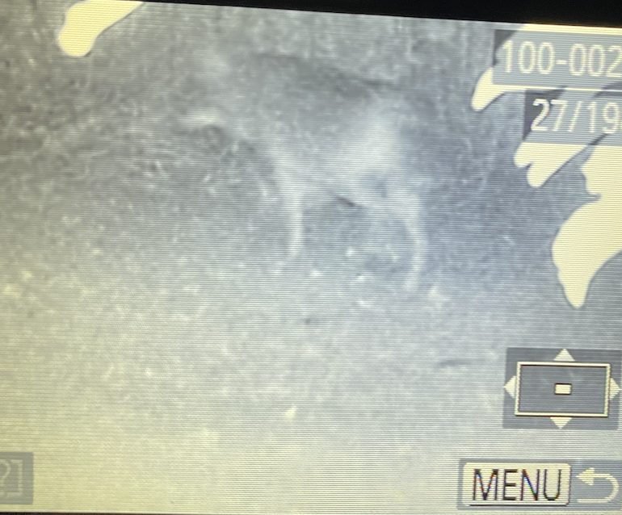
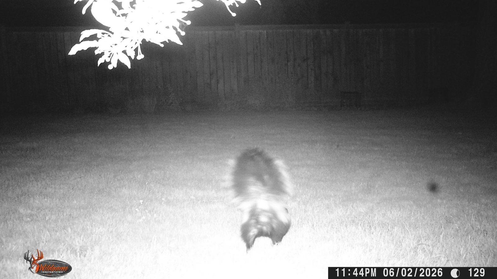
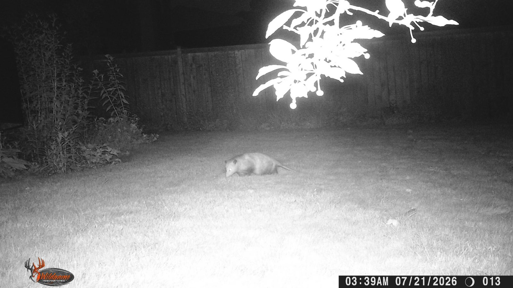
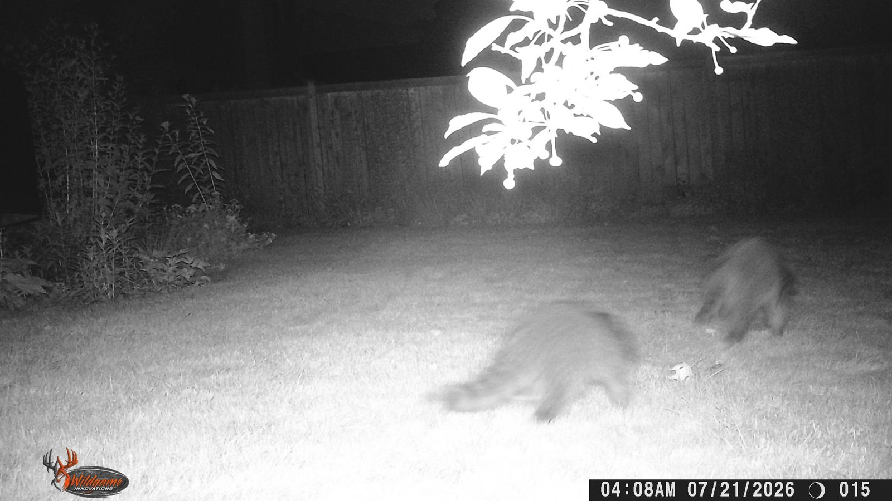
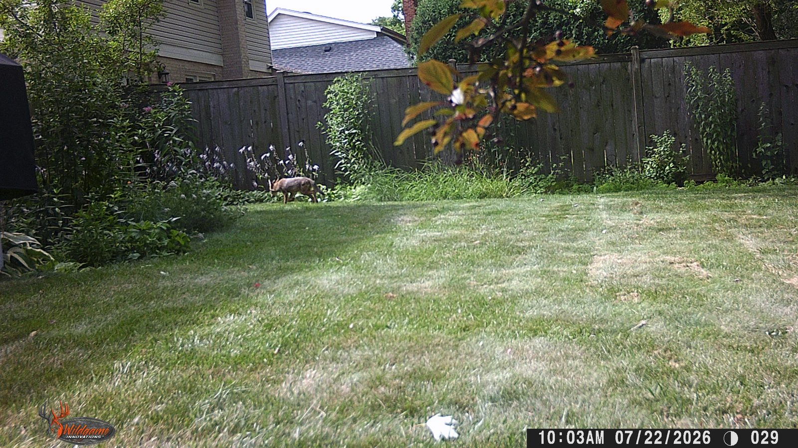
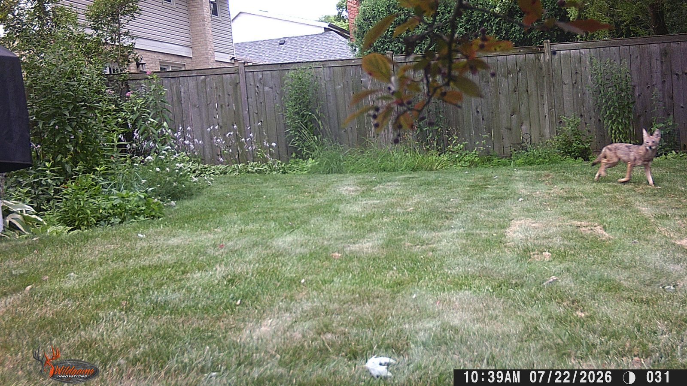

Trail Cam Photos
Skunk

Looking for dinner (grubs)
Opossum

Passing through
Grey fox

My guess, based on the rounded ears
Raccoons

Passing through
Coyote

Looking for dinner
Skunk

Spraying my camera
Skunk
Skunk foraging near the garden
Opossum

Opossum on the move
Coyote
Slinking along the fence line
Raccoon

Raccoon making its rounds
Coyote

Bold daytime coyote in the garden
Coyote

Best shot yet — coyote running through the yard